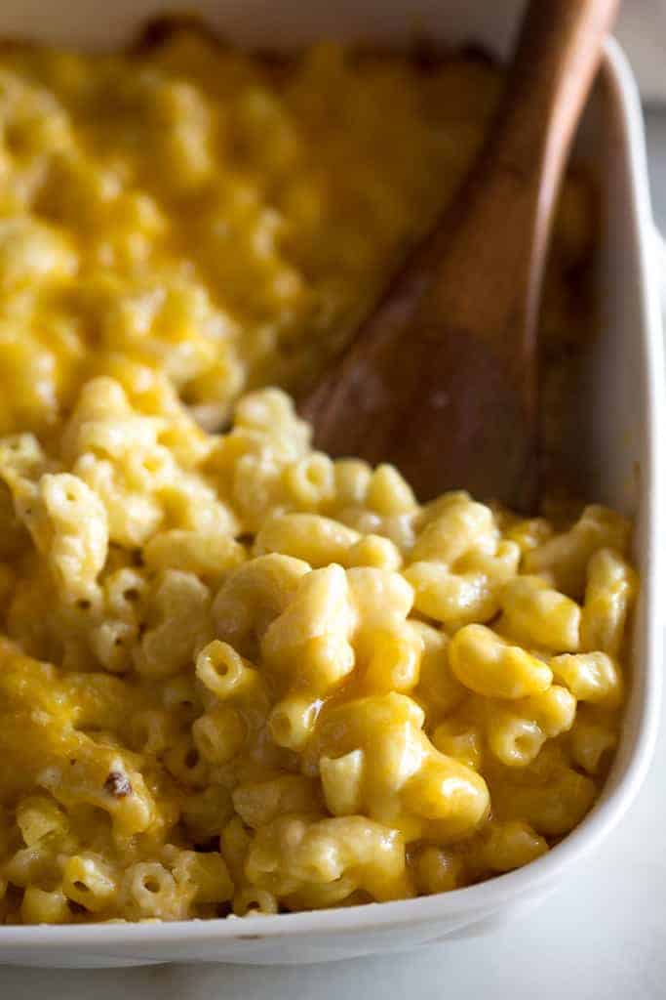

Homemade Mac and Cheese
This recipe is from
Here

Decription
Wikipedia Description:
Macaroni and cheese (colloquially known as mac and cheese and known as macaroni cheese in the United Kingdom) is a pasta dish of macaroni covered in cheese sauce,
most commonly cheddar sauce. Its origins trace back to cheese and pasta casseroles in medieval England.
The traditional macaroni and cheese is put in a casserole dish and baked in the oven;
however, it may be prepared in a sauce pan on top of the stove, sometimes using a packaged mix such as became popular in the mid-20th century.
The cheese is often included as a Mornay sauce added to the pasta. It has been described as "comfort food"
Ingredients
- 1/2 lb uncooked elbow macaroni * (225 g)
- 3 tablespoons butter (43 g)
- 2 Tablespoons all-purpose flour (16 g)
- 1/2 teaspoon salt
- 1/8 teaspoon ground black pepper
- 1 1/2 cups milk , any kind (360 ml)
- 3/4 cup half and half (180 ml)
- 2 1/2 cups shredded cheddar cheese* (250 g)
Instructions
-
Preheat the oven to 325 degrees F and lightly grease an 8' square (or similar size) baking dish.
-
Cook the macaroni to al dente, according to package instructions. Drain and set aside.
-
Make the sauce: Melt the butter in a medium saucepan over medium heat. Blend in the flour, salt, and pepper. Cook for 2 minutes.
Slowly add the milk and half and half, stirring constantly, and cook over medium-low heat for a few minutes until the mixture has thickened like the consistency of gravy,
about 5-7 minutes. Remove from heat and stir in 1 cup shredded cheese, stirring just until melted.
-
Combine: Add the cooked macaroni noodles and toss to coat. Pour half or the pasta mixture into the prepared baking dish.
Sprinkle ½ cup cheese over the top. Add remaining pasta and sprinkle with remaining cheese.
-
Bake for 15-20 minutes or until cheese is melted on top.
Home